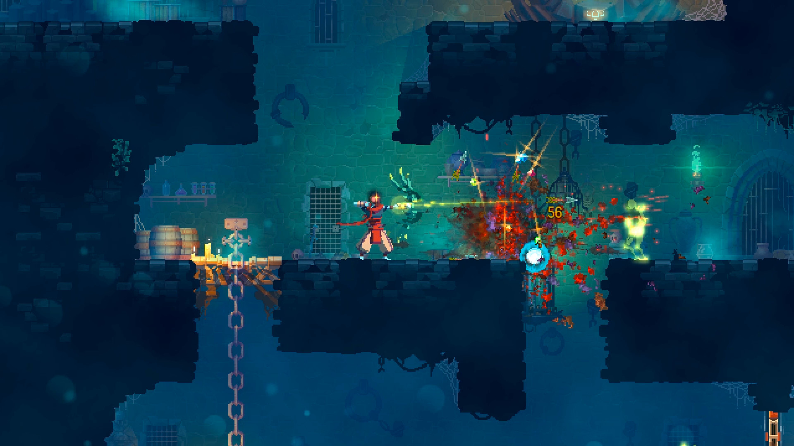
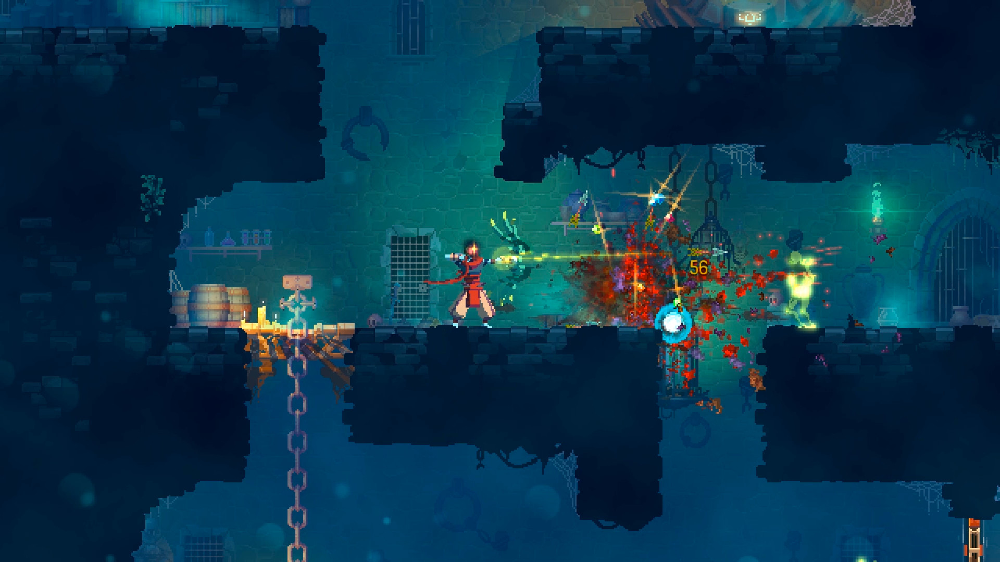

Dead Cells é definido pelos seu desenvolvedores como “um roguelike de ação em plataforma inspirado em Castlevania” no qual é preciso entender um combate “souls-like” em 2D. Calma, muitos nomes em uma descrição só, não é?
Se você é um jogador mais antigo, foque em Castlevania. O jogo faz parte de um subgênero dos games conhecido como metroidvania. Trata-se de uma mistura de elementos das série Metroid e Castlevania, com a exploração não linear do mundo, variações de armas que abrem lugares secretos e uma necessidade de visitação recorrente dos ambientes.
Isso realmente Dead Cells faz muito bem. É preciso explorar um série de ambientes 2D, lugares com portas fechadas, subidas mais altas que o pulo duplo inicial e outras séries de localidades para as quais é preciso voltar vez ou outra para completar o jogo.
A diferença de Dead Cells para os dois jogos iniciais que o inspiraram é o que estimula o jogador a voltar pelo caminho percorrido e entrar nos ambientes secretos deixados para trás. Em Metroid e Castlevania isso era feito com um obstáculo intransponível, isto é, o jogador batia de frente com uma porta ou sala que não conseguia atravessar por não ter o item certo e era obrigado a voltar em busca de outro caminho. Já em Dead Cells, embora isso também aconteça, há um mote maior: o do roguelike.
O subgênero consiste em um sistema de morte permanente, no qual o jogador precisa recomeçar tudo de novo caso morra. A primeira consequência direta desse conceito é a valorização da vida. Sem saves pela fase, é preciso tomar muito, mas muito cuidado com os inimigos para não perder totalmente seu progresso. Mas calma, falemos deste balanço entre morte e vida e como o jogo faz isso mais para frente.
A segunda vantagem de fazer com que o jogador volte e comece tudo de novo é obrigá-lo a revisitar todo o caminho pelo qual já passou. É aqui que entra o caráter de progressão não-linear. Ao voltar para o começo, você é instigado a seguir por outro caminho, ou mesmo o faz por não lembrar a rota inicial.
É uma evolução criativa do gênero, já que grande parte dos metroidvanias recentes funcionam como os games originais. Ou seja, fazendo com que os jogadores voltem duas casas sem que isso seja realmente recompensador. Até para o estilo do roguelike, este é um casamento que funciona bem. Ao estimular o jogador a recomeçar sua progressão, o subgênero tende a ser repetitivo, já que é preciso refazer os mesmos caminhos várias vezes.